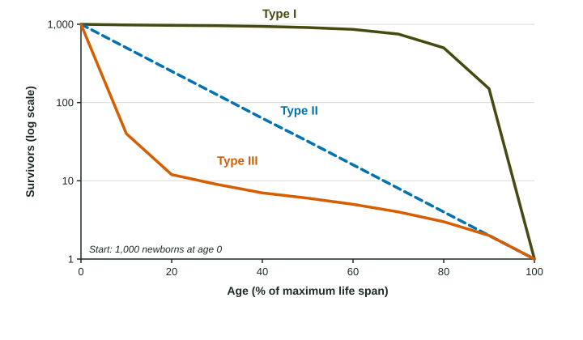

Survivorship Curves
A survivorship curve plots the number of survivors from a group born at the same time against age.
Part 1 · Hook
Why this matters
Part 2 · Before you start
What this builds on
Part 3 · Prerequisite check
Quick check before you start
1. Which traits describe a K-selected species?
- Few offspring, much parental care, long life
- Many offspring, no care, short life
- Many offspring, much care, short life
- Few offspring, no care, short life
Show the answer
K-selected species invest a lot in a few offspring and live long.
- Correct: Few offspring, much parental care, long life:
- Many offspring, no care, short life:
- Many offspring, much care, short life:
- Few offspring, no care, short life:
2. What does biotic potential describe?
- The fastest a population could grow with unlimited resources
- How long individuals live
- The number of species in an area
- How evenly species are spread
Show the answer
Biotic potential is the fastest possible population growth.
- Correct: The fastest a population could grow with unlimited resources:
- How long individuals live:
- The number of species in an area:
- How evenly species are spread:
Part 4 · See it
See it first

Part 5 · Step by step
How it works, step by step
- Scientists follow a group of individuals born at the same time and count survivors at each agethey get a survivorship curve: survivors (often on a log scale) plotted against age
- Most deaths happen late in life, as with parental care and good protection when youngthe curve stays high and then drops steeply at old age: Type I
- Deaths happen at a steady rate at every agethe curve falls as a straight line on a log scale: Type II
- Most deaths happen very early, as with many unprotected offspringthe curve drops steeply at first, then levels off for the few survivors: Type III
Part 6 · Key ideas
Key ideas
- A survivorship curve shows how many individuals of a group born at the same time are still alive at each age. Survivors are usually plotted on a log scale, starting from 1,000.
- Type I: high survival through most of life, with deaths concentrated in old age. Humans in wealthy countries, elephants, many large mammals.
- Type II: a steady chance of dying at every age, so the curve is a straight line on a log scale. Many songbirds, lizards, some rodents.
- Type III: very many deaths among the young, then high survival for the few that make it. Oysters, most fish, many insects and plants.
Part 7 · Misconception
A common mistake
The wrong idea: Survivorship curve and r- or K-selection are the same idea, so a Type III curve means the species is r-selected.
What actually happens: They are related but different. A survivorship curve shows when individuals die; r- and K-selection describe how they reproduce. K-selected species usually have Type I or II curves and r-selected species Type II or III, but the curve alone does not tell you the strategy.
Part 8 · Check yourself
Check yourself
Exam-style questions. Anything you miss goes into your review queue.
Model or diagram
Three survivorship curves
1. Which curve in the figure shows a population in which most individuals die young?
- Type III
- Type I
- Type II
- Types I and II equally
Show the answer
A steep early drop means most of the young die.
- Correct: Type III: Right: it drops from 1,000 to about 40 by 10% of the life span.
- Type I: Type I stays near 1,000 until late in life.
- Type II: Type II falls at a steady rate, not mostly at the start.
- Types I and II equally: Neither drops steeply at the start.
2. Why does the Type II curve appear as a straight line on this graph?
- The same number die in each interval, so the line is straight
- The same fraction die in each age interval
- Few of them die until near the end of life
- They are counted just once, at the end of life
Show the answer
On a log scale, a constant proportion lost each interval gives a straight line.
- The same number die in each interval, so the line is straight: With the same number dying each interval, the line would curve on a log scale.
- Correct: The same fraction die in each age interval: Right: a constant share dying per interval gives a straight line when survivors are on a log scale.
- Few of them die until near the end of life: That would be a flat line followed by a drop, like Type I.
- They are counted just once, at the end of life: The curve shows counts at every age.
3. Which animal is most likely to have a Type I survivorship curve?
- An oyster, which releases millions of eggs into the water
- A songbird, which is about as likely to die at any age
- An elephant, which guards its calf for years
- A sea star, whose larvae drift unprotected in the ocean
Show the answer
Parental care and protection of the young push deaths toward old age.
- An oyster, which releases millions of eggs into the water: Most oyster larvae die very young: Type III.
- A songbird, which is about as likely to die at any age: A steady risk at every age is Type II.
- Correct: An elephant, which guards its calf for years: Right: protection of the young means most survive until old age.
- A sea star, whose larvae drift unprotected in the ocean: Unprotected larvae mostly die young: Type III.
4. A wealthy country improves care for newborns and young children. How would this most likely change the shape of its human survivorship curve?
- It would drop more steeply in the first years of life
- It would become a straight line on a log scale
- It would not change, as the curve shows old age alone
- It would stay high longer, pushing deaths to older ages
Show the answer
Lowering deaths at young ages keeps the curve high longer.
- It would drop more steeply in the first years of life: Better care lowers early deaths, so the early drop shrinks.
- It would become a straight line on a log scale: A straight line means the same risk at every age, which better child care does not create.
- It would not change, as the curve shows old age alone: The curve shows deaths at every age, including childhood.
- Correct: It would stay high longer, pushing deaths to older ages: Right: fewer deaths early in life keep the curve high, a stronger Type I.
Data
Survivors in two populations
| Age (years) | Species M alive | Species N alive |
|---|---|---|
| 0 | 1,000 | 1,000 |
| 1 | 50 | 500 |
| 2 | 30 | 250 |
| 3 | 22 | 125 |
| 4 | 18 | 62 |
| 5 | 15 | 31 |
5. What pattern does species N follow from age 0 to age 5?
- The same number of them die each year
- About half the survivors die each year
- Nearly the whole group dies in year one
- Hardly any die after the first year
Show the answer
A constant fraction lost each year is a Type II pattern.
- The same number of them die each year: The number dying falls each year (500, 250, 125 ...); the fraction stays the same.
- Correct: About half the survivors die each year: Right: 1,000, 500, 250, 125, 62, 31: halving each year, a Type II pattern.
- Nearly the whole group dies in year one: Half survive the first year.
- Hardly any die after the first year: Survivors keep falling every year.
6. What percent of the species N individuals alive at age 2 are still alive at age 4?
Type a number, then its unit (%). Scale words (2.5 million) and powers of ten (2.5 × 10^6) are read.
Show the answer
Survivors at 4 over survivors at 2, times 100: , about a quarter, as two halvings predict.
- Answer: 24.8 %
Part 9 · Summary
Summary
Part 10 · Up next
What comes next
Part 11 · Connections